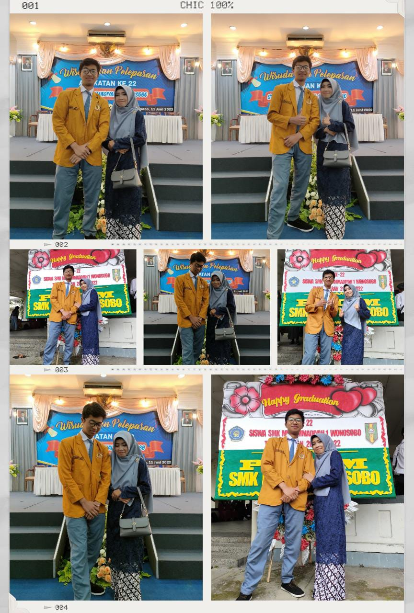
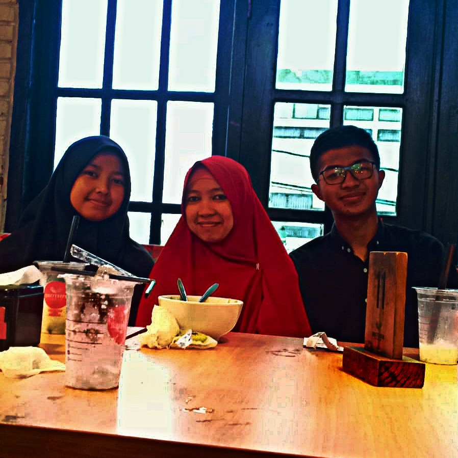
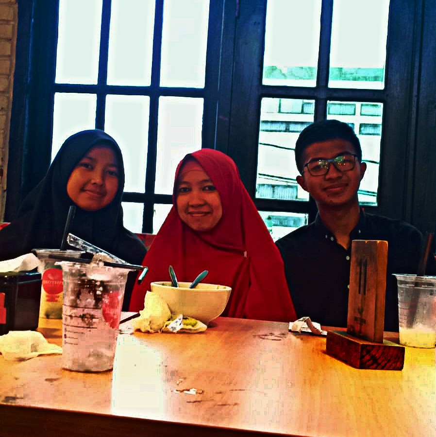

Syukurku
Terimakasih ya Allah sudah mempertemukan ku dengan bunda, Irmanis Siyam, S.Pd.I yang selalu baik yang selalu memeperhatikan, besar syukurku kepadamu ya Allah
Bahagiaku
Dengan rahman dan rakhim mu ya allah, selalu kasih sayangilah bunda, selalu berikan keberkahan kepadanya atas apa yang telah engkau turunkan kepadanya.

Doaku
Doaku
Dengan kasih sayangmu ya allah, selalu berikan yang terbaik kepadanya ya Ya Allah, kumpulkan lah kembali di dalam surgamu dengan orang orang yang kami cintai...
Gallery
.jpeg)
.jpeg) 

.jpeg)
memories
reading in heart please
Teruntuk ibunda...
Akulah sang oengukir mimpi
yang menghendaki pergi dari sunyi
yang berjalan tak tahu arah
yang slalu dirundung rasa gelisah
bersyukur bisa bertemu, dar SMK ku ingin sampai ke surga
kaulah matahariku yang menerangiku dalam gelapku
kau tuntun aku yang berjalan dalam liku
penuh ujian tantangan dan rasa ragu
ya allah terimakasihku rsa syukurku yang ku panjatkan kepadamu
ku berteduh dalam ridho mu
ku selalu memohon ampunan darimu
ibundaa...
kau lah kunci sukssku
ku yang berteduh dalam doa mu.